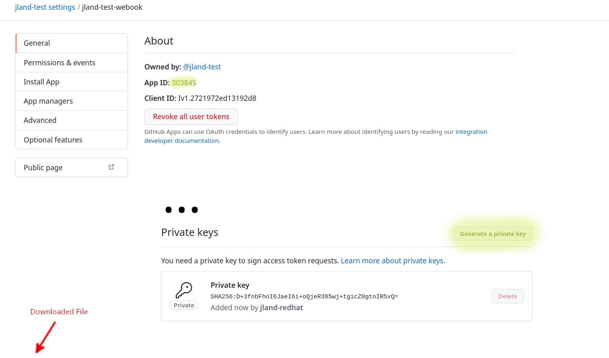
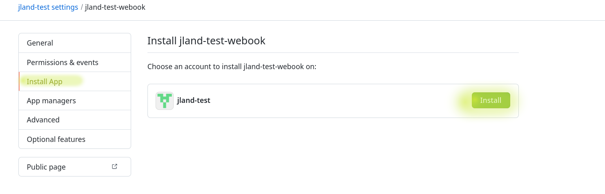
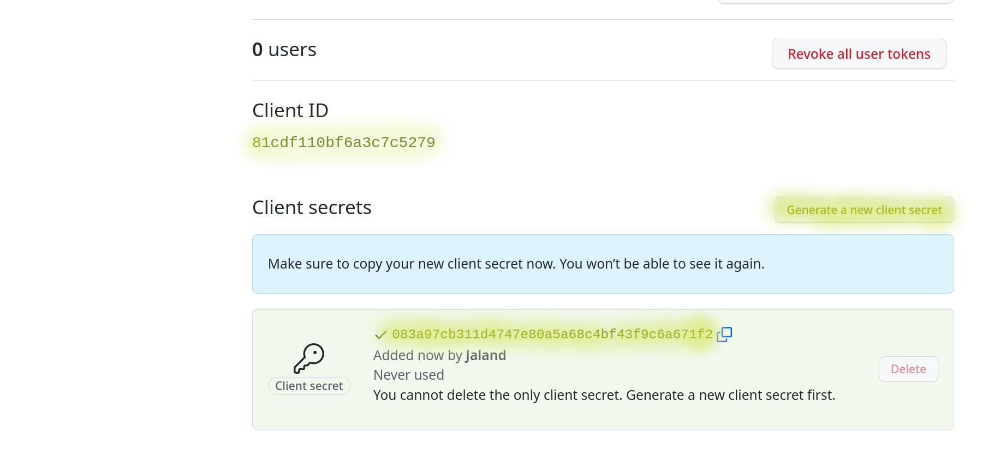

Getting Started
Prerequisites
- Access to an Openshift 4+ deployment and logged in with the CLI (version 4.11 or higher)
- Install the Following CLIs
- ansible/ansible-galaxy
- helm
- Please use the version included with your Openshift Deployment
- pip3
Install Packages
-
The Ansible
kubernetes.coreandcommunity.hashi_vaultcollections need to be installed before using this playbook. -
The
kubernetes,openshift,hvac, andPyYAMLpython packages need to be installed before using this playbook. -
The
helm diffplugin should to be installed before using this playbook.
Configuration
For ease of setup, set the OPENSHIFT_CLUSTER_INFO variable for use later.
Using Linux?
If you are using a Linux environment, set the alias for the following commands to work:
For the remaining environment variables, it may be preferable to make use of ./env.sh file provided at the root of this project. Fill in the listed env vars as you complete the setup configuration, then run source ./env.sh.
Create GitHub Organization
Create a new Github Organization. This organization will contain the code repositories for the components created by Backstage.
The GITHUB_ORGANIZATION environment variable will be set to the name of the organization.
Tip
You may also use any organization you are a member of, as long as you have the ability to create new repositories within it.
Set Up GitHub Application
-
Create a new GitHub Application to use the
Git WebHooksfunctionality in this demo. The required field will be populated, and correct permissions set.open "https://github.com/organizations/$GITHUB_ORGANIZATION/settings/apps/new?name=$GITHUB_ORGANIZATION-webhook&url=https://janus-idp.io/blog&webhook_active=false&public=false&administration=write&checks=write&actions=write&contents=write&statuses=write&vulnerability_alerts=write&dependabot_secrets=write&deployments=write&discussions=write&environments=write&issues=write&packages=write&pages=write&pull_requests=write&repository_hooks=write&repository_projects=write&secret_scanning_alerts=write&secrets=write&security_events=write&workflows=write&webhooks=write" -
Set the
GITHUB_APP_IDandGITHUB_APP_CLIENT_IDenvironment variables to the App ID and App Client ID, respectively. Generate a new client secret and set theGITHUB_APP_CLIENT_SECRETenvironment variable. Then, generate aPrivate Keyfor this app and download the private key file. Set theGITHUB_KEY_FILEenvironment variable to the downloaded file, using either the absolute path or the path relative to theansible/cluster-setupdirectory.
-
Go to the
Install Apptable on the left side of the page and install the GitHub App that you created for your organization.
Create Github OAuth Applications
Create an GitHub OAuth application in order to use GitHub as an Identity Provider for Backstage.
open "https://github.com/settings/applications/new?oauth_application[name]=$GITHUB_ORGANIZATION-identity-provider&oauth_application[url]=https://assemble-demo.apps$OPENSHIFT_CLUSTER_INFO&oauth_application[callback_url]=https://keycloak-backstage.apps$OPENSHIFT_CLUSTER_INFO/auth/realms/backstage/broker/github/endpoint"
Set the GITHUB_KEYCLOAK_CLIENT_ID and GITHUB_KEYCLOAK_CLIENT_SECRET environment variables with the values from the OAuth application.

Create a second GitHub OAuth application to enable Dev Spaces to seamlessly push code changes to the repository for new components created in Backstage.
open "https://github.com/settings/applications/new?oauth_application[name]=$GITHUB_ORGANIZATION-dev-spaces&oauth_application[url]=https://devspaces.apps$OPENSHIFT_CLUSTER_INFO&oauth_application[callback_url]=https://devspaces.apps$OPENSHIFT_CLUSTER_INFO/api/oauth/callback"
Set the GITHUB_DEV_SPACES_CLIENT_ID and GITHUB_DEV_SPACES_CLIENT_SECRET environment variables will the values from the OAuth application.
Create a third GitHub OAuth application to enable the numerous Backstage plugins utilizing GitHub to authenticate and access the relevant data.
open "https://github.com/settings/applications/new?oauth_application[name]=$GITHUB_ORGANIZATION-backstage&oauth_application[url]=https://assemble-demo.apps$OPENSHIFT_CLUSTER_INFO&oauth_application[callback_url]=https://assemble-demo.apps$OPENSHIFT_CLUSTER_INFO/api/auth/github/handler/frame"
Set the GITHUB_BACKSTAGE_CLIENT_ID and GITHUB_BACKSTAGE_CLIENT_SECRET environment variables will the values from the OAuth application.
Install
Clone the assemble-platforms repo and run the next commands from inside of the ansible/cluster-setup directory
git clone https://github.com/janus-idp/assemble-platforms.git
cd assemble-platforms/ansible/cluster-setup
Run Cluster Setup Playbook
Fork the Software Templates repository to your organization. Ensure that the name of the forked repo remains as software-templates
Execute the following command to complete setup of the fork. This playbook will customize your fork of the Software Templates repo with relevant information pertaining to your cluster, and mimic the structure of a custom template being used in an enterprise IT environment.
Install
The Inventory values in inventory/group_vars/all.yml can be changed, but it is not required
Run Command:
Note
The deployment of most infrastructure is delegated to ArgoCD. Once the playbook successfully runs, it may take several minutes until the demo is fully operational. The deployment can be monitored in the ArgoCD console.
The cluster is now set up to run the Janus IDP Demo. To create a local copy of the requisite environment variables for future use, run the following command:
echo "export GITHUB_ORGANIZATION=$GITHUB_ORGANIZATION
export GITHUB_APP_ID=$GITHUB_APP_ID
export GITHUB_APP_CLIENT_ID=$GITHUB_APP_CLIENT_ID
export GITHUB_APP_CLIENT_SECRET=$GITHUB_APP_CLIENT_SECRET
export GITHUB_KEY_FILE=$GITHUB_KEY_FILE
export GITHUB_KEYCLOAK_CLIENT_ID=$GITHUB_KEYCLOAK_CLIENT_ID
export GITHUB_KEYCLOAK_CLIENT_SECRET=$GITHUB_KEYCLOAK_CLIENT_SECRET
export GITHUB_DEV_SPACES_CLIENT_ID=$GITHUB_DEV_SPACES_CLIENT_ID
export GITHUB_DEV_SPACES_CLIENT_SECRET=$GITHUB_DEV_SPACES_CLIENT_SECRET
export GITHUB_BACKSTAGE_CLIENT_ID=$GITHUB_BACKSTAGE_CLIENT_ID
export GITHUB_BACKSTAGE_CLIENT_SECRET=$GITHUB_BACKSTAGE_CLIENT_SECRET" > env.sh
FAQ
Stuck on FAILED - RETRYING: [localhost]: Wait for Keycloak to be Ready (xxx retries left) for over 2 minutes
Bounce the pod deployed by the keycloak StatefulSet in the backstage namespace. The playbook will pick up again once the new pod is up.
Failed on Run RHSSO Backstage Helm Chart during initial run no matches for kind \"Keycloak\" in version...
The RHSSO operator may not have completed installation, try rerunning the Ansible Playbook.
Failed on Create Manifests Repo
Most likely an environment variable is not set, or not set correctly. Validate, delete the Postgres Database Deployment and re-try the playbook.
Log in to Argo Cluster
To access the console, the password for the admin user can be found in the argocd-cluster secret.